Wooden Record Player
Choose a track and a resident brings you its disc. Place it on the platter to listen together. Return that same disc before changing the music.
Inspect the wooden record player in 3DMixed reality game · Meta Quest 3
Five tiny residents. One second-hand suitcase.
The residents leave their old woodshop with their furniture in pieces. As their Room Host, you help restore each belonging and find a place for it in your own home.
Game and interaction design, character direction, and technical art.
A reason to build together
At the workbench, you rebuild the furniture the residents packed. As their Room Host, you choose where each piece goes and how to use it together.

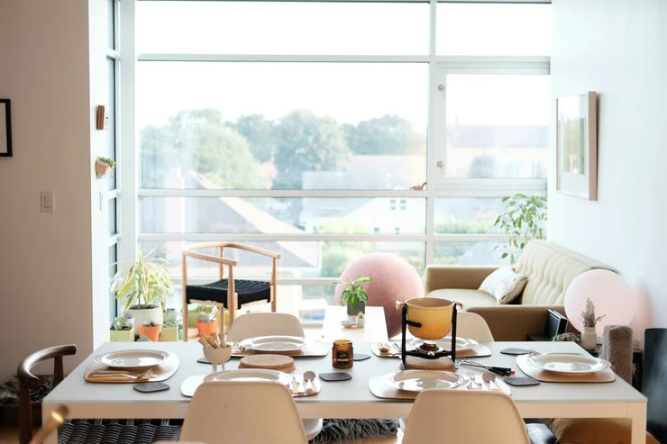
Completing the six core projects leads to an invitation to stay. Four further projects give the household more places to spend time together.
Learning to read a joint
I studied 34 Chinese joinery structures. Three principles shaped how players fit the furniture together.

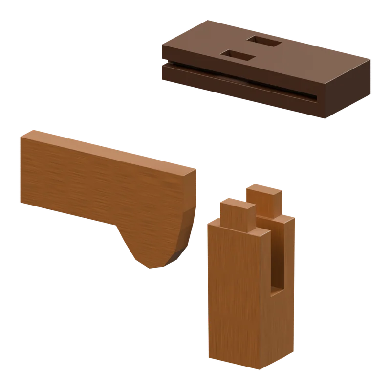


Inside the suitcase
The suitcase lid is home to five residents. Across the bridge, two fold-out trays put tools and pigments within reach of the turntable.

From joint to finish
Each recipe selects the work its furniture needs. A peg repair calls for a drill and a saw. A carved surface calls for a gouge, a brush and a lighter touch.
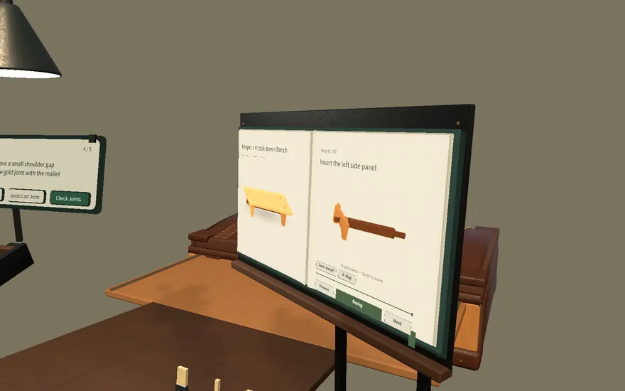
Core toolsJoinery mallet · Screwdriver

Core toolsClamp · Gauge · Hand drill · Saw · Chisel

Core toolsHand plane · Sanding block · Dust brush
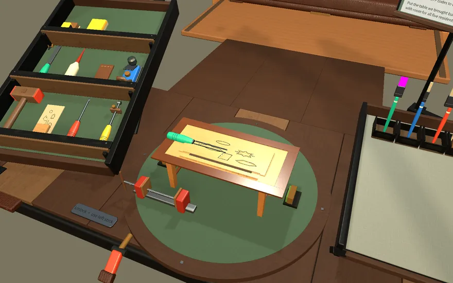
Core toolsTransfer sheet · Carving gouge · Dust brush
Core toolsPalette · Test offcut · Brushes · Wax pad

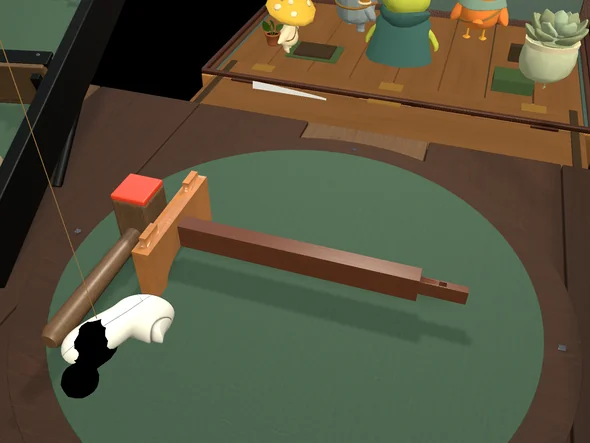
Drag a tool to rotate it and inspect its working end.

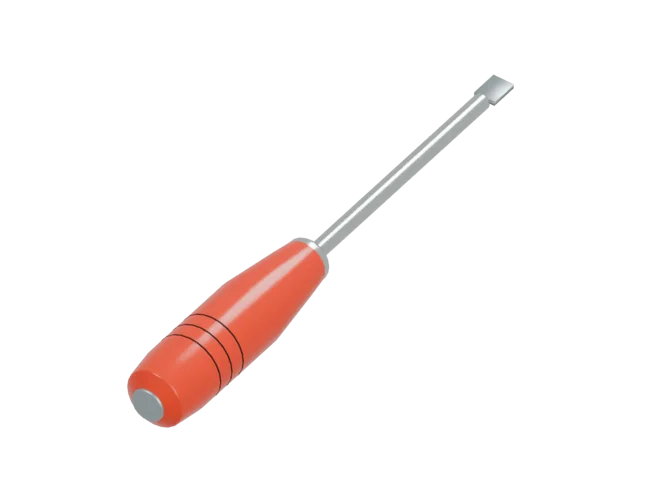


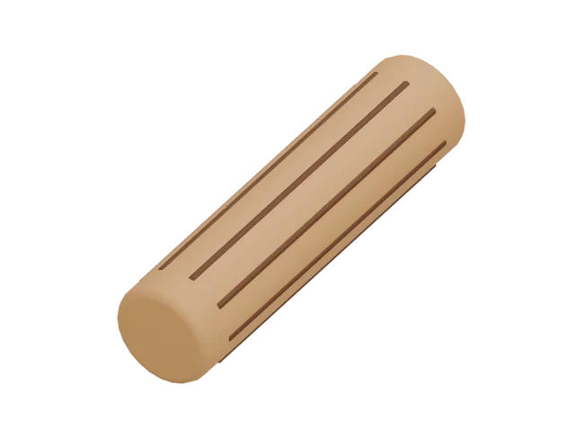


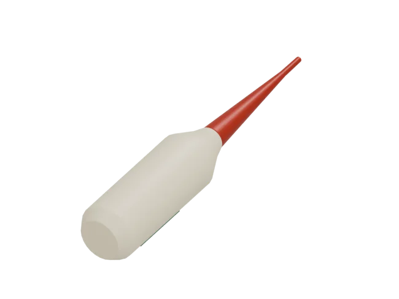
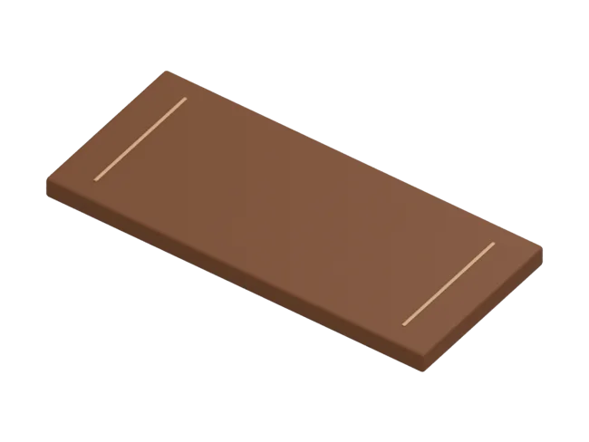

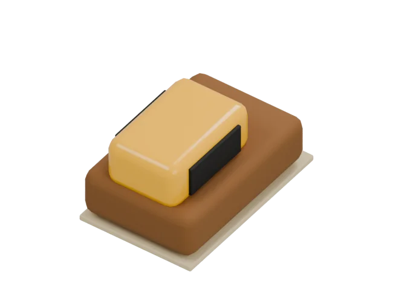


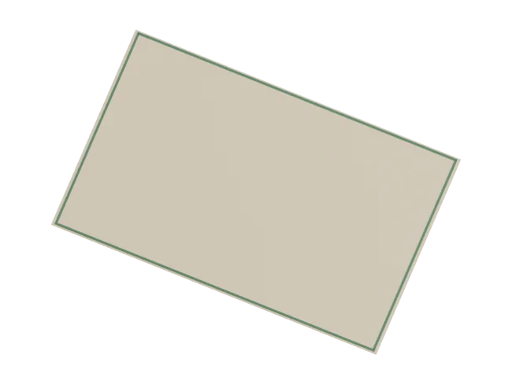


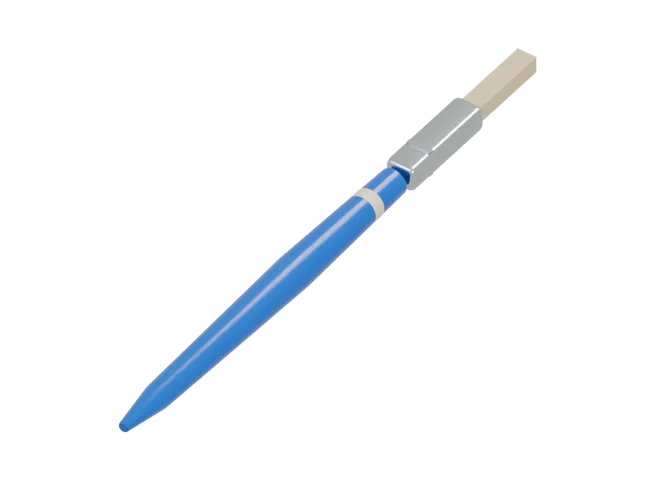


An interactive assembly manual
The left page keeps the finished piece in view. On the right, follow the next part into its joint. Rotate either drawing, replay the movement or look through the wood.
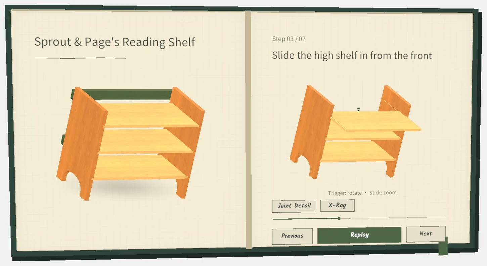


Objects for a shared room
I designed ten pieces of wooden furniture using traditional Chinese mortise-and-tenon joinery. Restoring each one brings back something the residents used to do together.
Choose a track and a resident brings you its disc. Place it on the platter to listen together. Return that same disc before changing the music.
Inspect the wooden record player in 3D
Archivist needs to reach a book. Sprout needs room for leaves. Listen to both residents, choose an arrangement and see how they share the shelf.
Inspect the reading shelf in 3D
Add tea and water, steep for eight seconds, then fill the cups. As everyone drinks, the different cups and habits become a way to get to know their owners.
Inspect the reading table in 3D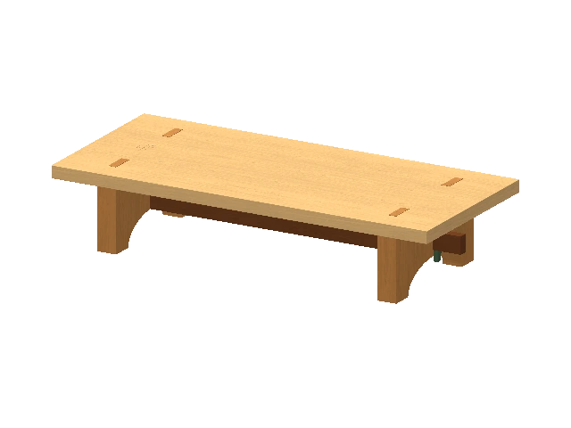


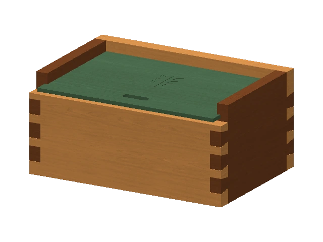


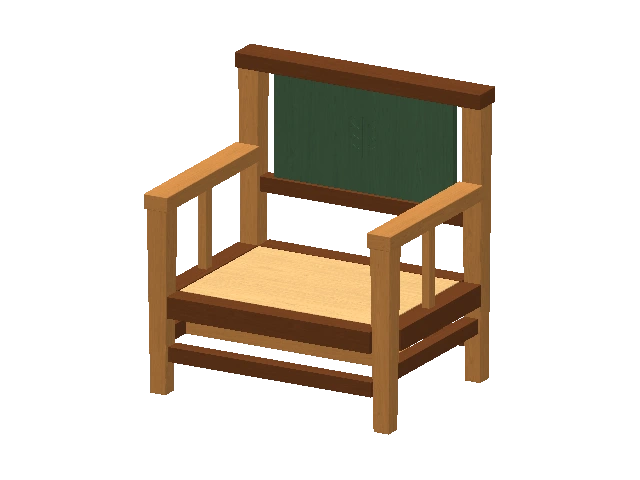


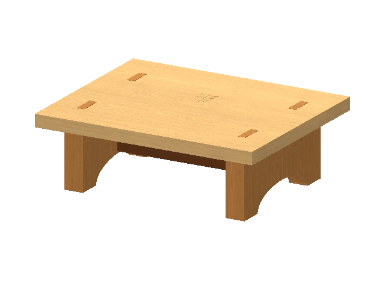


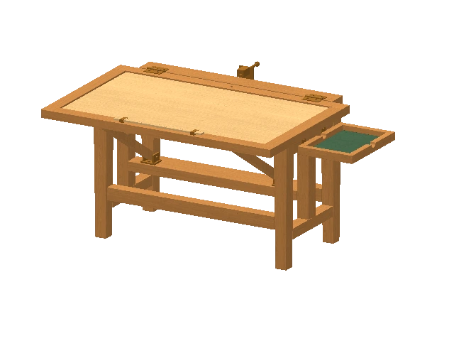

A place in your room
Your tabletop sets the direction of the workshop. The real room around it decides where a chair can go, where a resident can walk and when they need you to give them a lift.

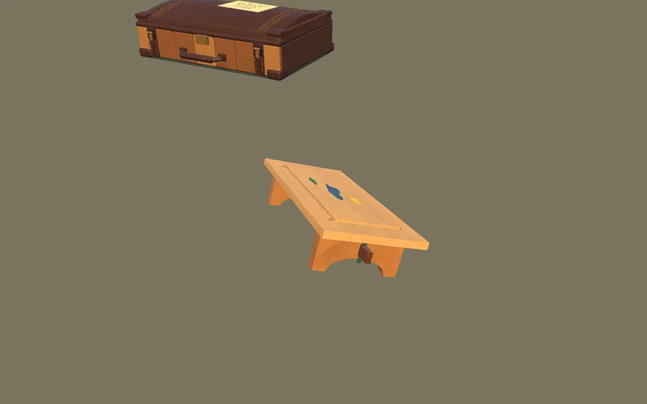


| Input | Response in the room |
|---|---|
| Room anchor | Restores the workshop across sessions. A failed refresh keeps the last usable map. |
| System menu | Pauses play while the menu is open. |
| Body and furniture geometry | Checks walking clearance and seat contact. A blocked placement returns the piece to the bench. |
| Hand or controller | One active input drives the hand mask. Depth determines which surface appears in front. |
Meet the roomies
Five people can reassure you in five different ways. Sprout leaves a little space between gestures. Courier rushes into a phrase, opens his arms, then waits. Each resident carries that same rhythm into the workshop and the room.
Listen to the five residents.

Gentle gestures and patient pauses. Sprout tends leaves and turns the cup handle away from them to make a little room.

Keeper checks the alignment of the wood before a reassuring nod. At tea, a small sip brings the drink back down to a familiar fill mark.

One hand supports the book while the other turns the page. Archivist marks the place before sipping and finds it again after a cup mix-up.

Open gestures give way to a sudden pause. Courier retrieves offcuts, shares music and shows the player how to grip his own cup.
Small gestures stay close to the body. Page keeps familiar wood and belongings, and will lend the old cup sleeve when the player asks.


Archivist marks the page and lifts Courier’s orange cup. The eyes widen as the voice catches. The hand finds the handle of that same cup to return it. Once it is back, Archivist can resume reading and later recall the mistake.

A moment to respond
Set a tool down and the work will wait. A resident can ask for help, or for a little time to sort something out. The player can answer, take part and pick up the same repair afterwards.
Page has kept the sleeve since the move. To see the packing mark underneath, set the empty cup upright and wait for her reply.
Once she agrees, slide the sleeve off through its seam and rest it on the pad. Returning the same sleeve ends this permission. The next visit begins with a fresh request, while the story about the mark can still be remembered.
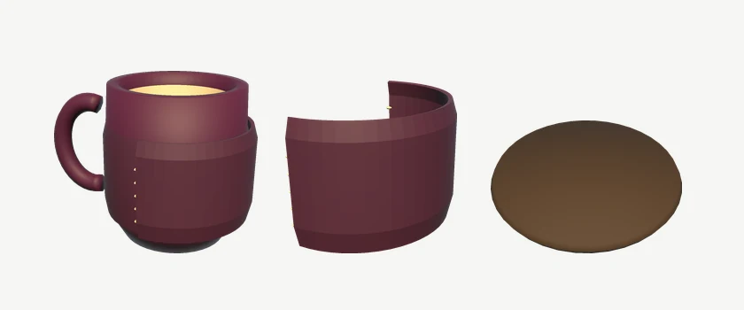
Deep in the book, Archivist reaches for someone else’s tea. How much help does he need?
Help return the orange and cream cups to their owners’ rests. Archivist resumes reading and remembers being helped.
Archivist puts the same orange cup back where he picked it up, finds his page and remembers settling the mix-up himself.

Tea rises above Keeper’s familiar fill mark. First, set the cup down safely. Then decide what to do with the extra.
Keeper lifts the cup and drinks a little tea. The level drops, and Keeper can mention this preference another day.
Pour the excess into a small serving cup. The physical transfer completes the exchange and Keeper remembers the response.

How the project changed
Three prototypes trace the shift from chance encounters to restoring something a resident actually uses.

Chance encounters left long gaps between shared activities.

Players worked together, but the furniture reward had little use.

Residents bring their own furniture, then use what the player repairs.


Keep the work within reach
A playtester with less strength in their left hand found sustained holding tiring. I moved the instructions closer and gave the tools supports, so a player can choose, position and operate a tool with one hand.
Both layouts keep the 38 cm reference reach and a level right tray. The left side changes to meet a seated player.


From making to moving in
The playable prototype brings ten joinery furniture pieces and five residents into a shared room. It keeps the finish and position of the furniture and remembers completed exchanges, from a borrowed belonging to a choice made during a song.
| Check | Result |
|---|---|
| 16 Nov · Editor | 357 cases · 353 passed · 0 failed · 4 historical saved-data cases skipped. |
| 22 Nov · Android | ARM64 / ASTC / OpenXR · 0 errors · 62 warnings. Headset installation and wear testing are unverified. |
Three implementation studies address different costs in a room full of small objects.
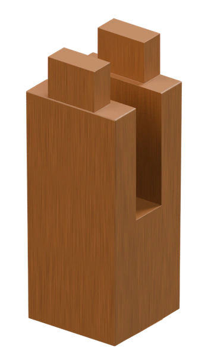
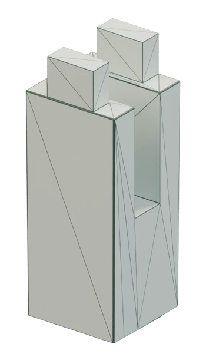
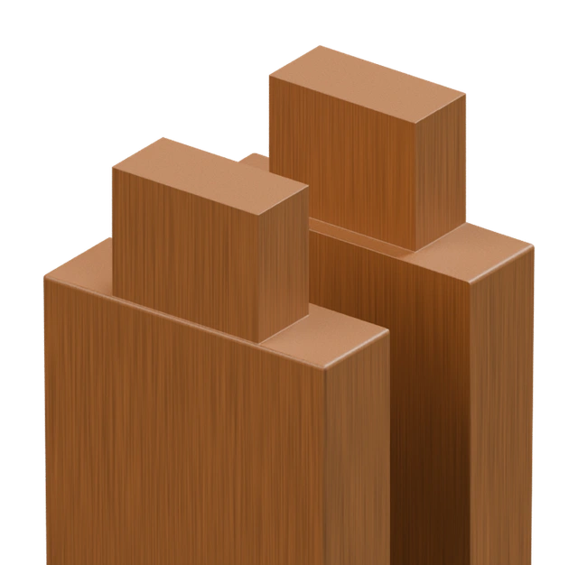


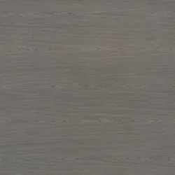